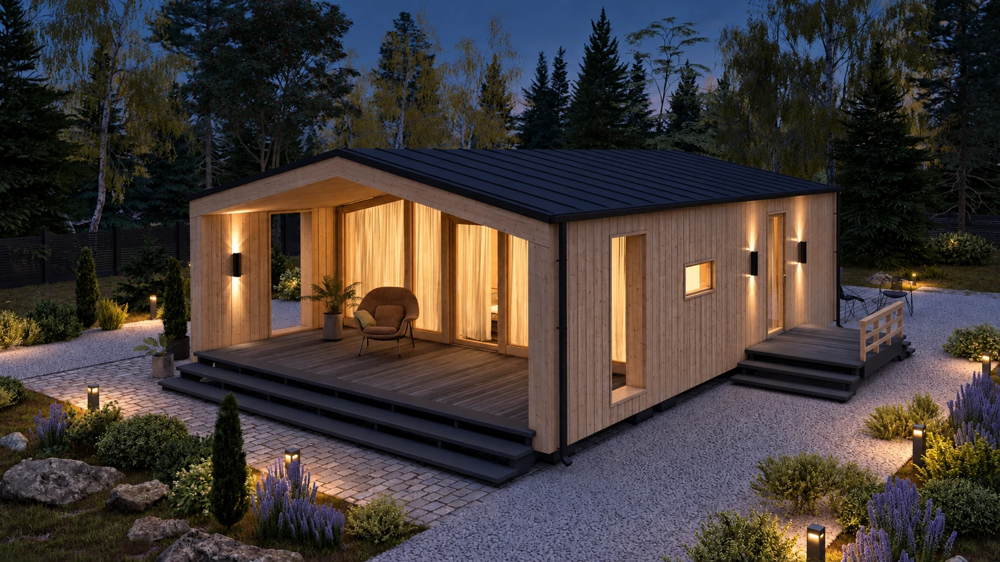
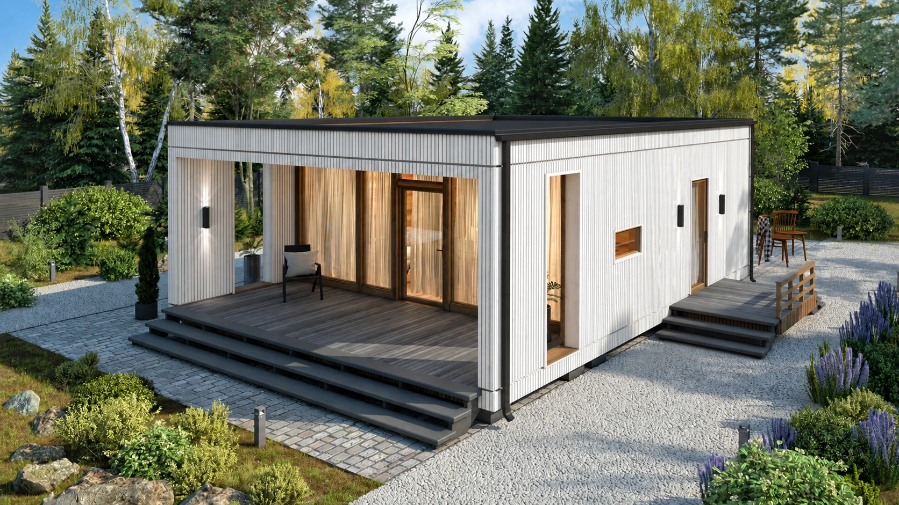
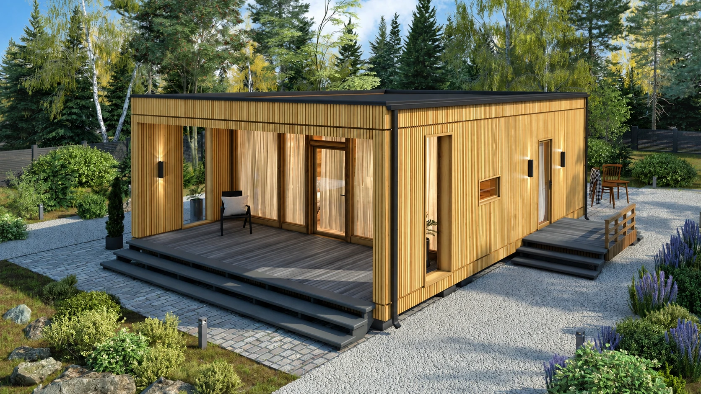
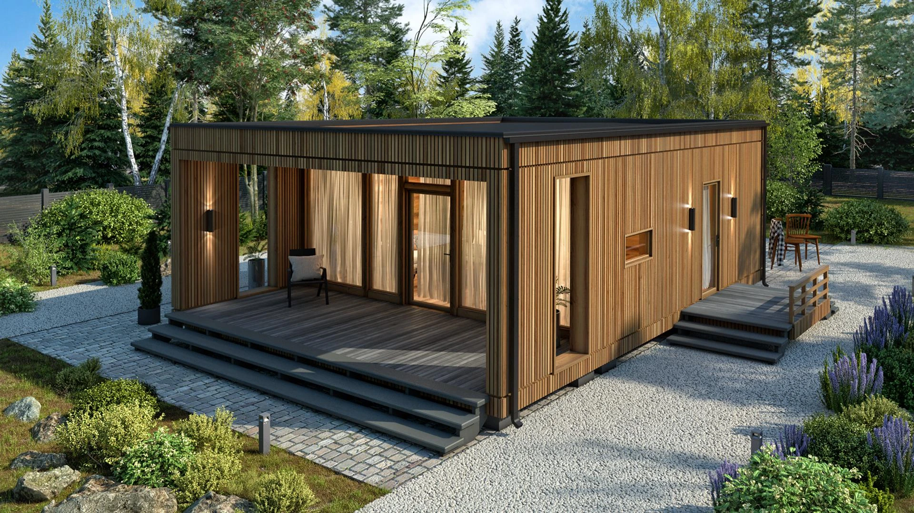
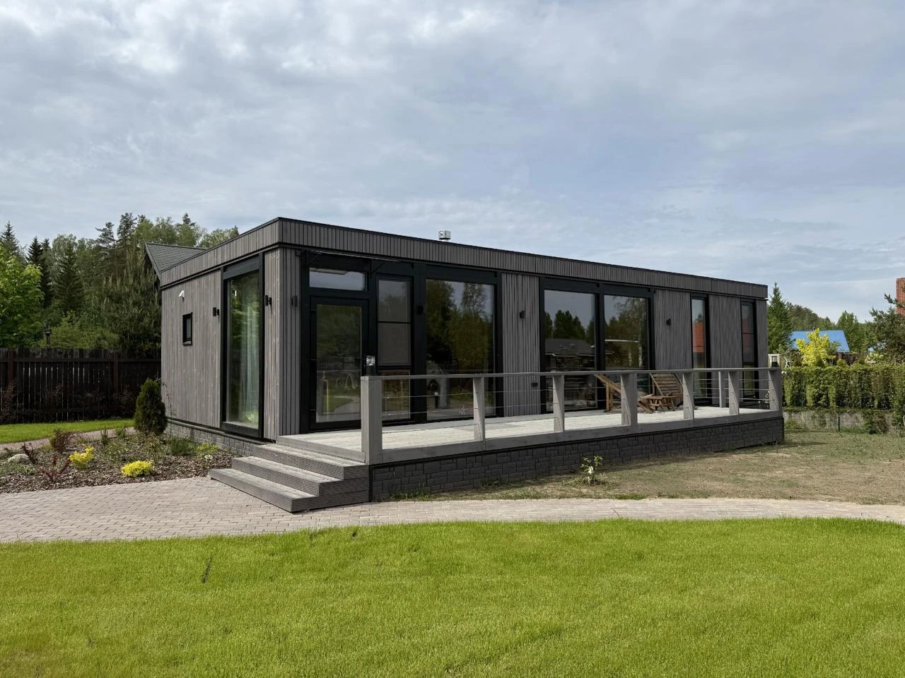

Знакомимся
Обсуждаем образ жизни, участок, площадь и бюджет.
РезультатЗадача на проектирование


ДОМА И БАНИ ИЗ CLT · КАЗАХСТАН
Компактный дом для двоих, пространство для семьи или собственная баня. Начните с того, что важно вам.
Рассмотрите архитектуру и загляните внутрь — в планировку, где у каждого пространства есть своё назначение.
Сдержанный антрацит или тёплое дерево — посмотрите, как цвет меняет один и тот же дом.




Визуализация оттенков
Материал уточняем по образцам
Выбранный оттенок добавим к заявке. Применение к вашему проекту обсудим отдельно.
CLT — перекрёстно склеенные слои древесины. Несущая панель работает вместе с утеплением, защитными слоями и фасадом.
Жёсткость и стабильность формы
Элементы под ваш проект
Конструкция, тепло и вентиляция
В каждом этапе — конкретные решения, которые мы обсуждаем и согласуем вместе с вами.
Обсуждаем образ жизни, участок, площадь и бюджет.
Выбираем архитектуру, планировку и состав работ.
Планируем производство, основание и доставку.
Собираем дом, выполняем согласованные работы и проверяем результат.

Панорамные окна, спокойные линии и терраса, на которую хочется выйти утром. Детали, из которых складывается ваш день.
В каталоге есть несколько вариантов для каждого дома. Индивидуальные изменения обсуждаем с учётом конструкции и инженерных систем.
Рассмотреть планировки ↗Стоимость зависит от выбранного проекта, комплектации, участка и доставки. Сохраните понравившийся вариант и отправьте параметры команде для расчёта.
Для круглогодичного дома проектируют всю систему: несущие панели, утепление, окна, отопление и вентиляцию с учётом климата участка.
О технологии CLT ↗Начать можно с обсуждения площади, образа жизни и бюджета. Расположение дома, основание и логистику уточним после выбора участка.
Посмотреть этапы ↗Расскажите, как вы хотите жить.
Мы поможем найти форму для вашей идеи.